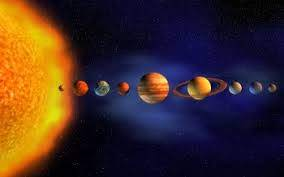

Welcome to the tour to know your solar system!!!
The solar system is made up of the sun and everything that orbits around it, including planets, moons, asteroids, comets and meteoroids. It extends from the sun, called Sol by the ancient Romans, and goes past the four inner planets, through the Asteroid Belt to the four gas giants and on to the disk-shaped Kuiper Belt and far beyond to the teardrop-shaped heliopause. Scientists estimate that the edge of the solar system is about 9 billion miles (15 billion kilometers) from the sun.

Planets
Our solar system is home to eight amazing planets. Some are small and rocky; others are big and gassy. Some are so hot that metals would melt on the surface. Others are freezing cold.
Let's have a look towards our planets
Planets' interesting facts
- Mercury-
- The smallest and fastest planet, it zips around the Sun in only 88 Earth days.
- Venus-
- Venus’ thick atmosphere makes it the hottest planet in our solar system.
- Earth-
- The only planet in our solar system with liquid water on the surface.
- Mars-
- Mars was a wet and warm planet billions of years ago.
- Jupiter-
- The largest planet, its dark red spot is a storm larger than Earth.
- Saturn-
- Saturn has the brightest, most massive and most complex ring system of any planet.
- Uranus-
- Uranus is tipped on its axis by almost 90-degrees.
- Neptune-
- Neptune was the first planet discovered through mathematical calculations, rather than observation.
For more such imformation click on know more button.
Know More